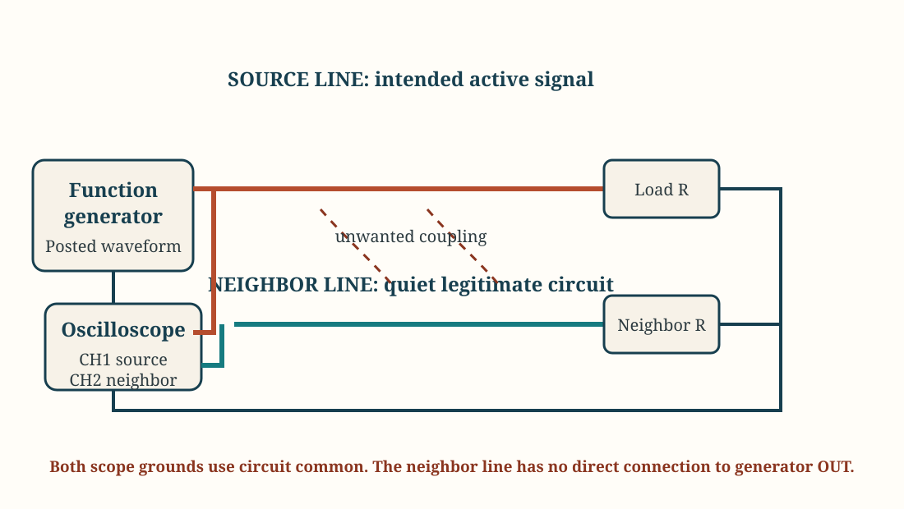
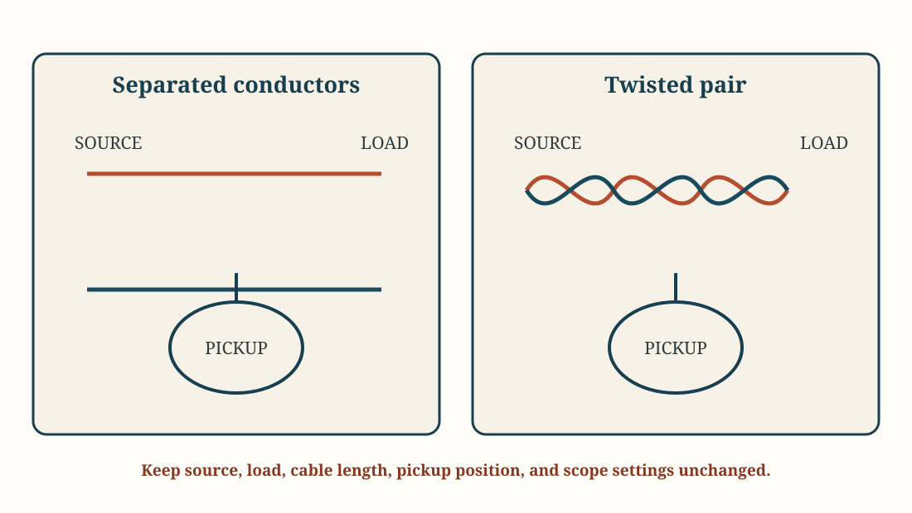

Laboratory
Lab 03 · Week 3 · September 18, 2026
Transformer Coupling and Breadboard Crosstalk
Compare useful transformer coupling with unintended crosstalk between nearby wires, then test two ways to reduce it
Learning Outcomes
By the End of This Lab
- Identify the two windings of a transformer and verify that there is no direct DC path between them
- Measure primary and secondary AC voltage and compare their ratio with the transformer expectation
- Compare intentional transformer coupling with unintended crosstalk between nearby conductors
- Measure how conductor orientation and receiver resistance affect observed crosstalk
- Use measured evidence to identify supported path-side and receiver-side improvements without overstating the result
The Big Picture
What You Are Doing
- Identify the windings of a transformer, verify the DC isolation boundary, and measure its AC voltage ratio.
- Build source and neighbor lines, then verify that the neighbor-line waveform is caused by the source without a direct signal-wire connection.
- Compare parallel conductors with a 90-degree crossing while keeping the source and measurement settings fixed.
- Change only the neighbor-line resistance, then use the evidence to compare intentional coupling, unintended crosstalk, and two ways to reduce crosstalk.
Before Lab
Preparation
- Review transformer windings, turns ratio, galvanic isolation, coupling, crosstalk, peak-to-peak voltage, RMS voltage, and amplitude ratio
- Recall that resistance and continuity are measured only with the source disabled and the component disconnected from power
Student Resources
Lab Report and Setup Diagram


Follow These Steps
Lab Walkthrough
Prepare the Station
- Open the Lab 3 report and enter your name and lab partners.
- Procure all necessary equipment.
- Put the DMM black lead in
COMand the red lead inV/Ω. - Keep the function-generator output disabled.
Part 1: Observe Intentional Coupling in a Transformer
- Read the transformer nameplate. Record its rated primary voltage and full-secondary voltage, then calculate the expected ratio as
rated secondary voltage / rated primary voltage. Use the two outer secondary leads, not the center tap, for every full-secondary measurement. - Disconnect the transformer from the function generator. Set the DMM to resistance and verify the labeled primary pair and full-secondary pair. Record both winding resistances in Table 1. The primary should be the higher-resistance winding.
- With the transformer still unpowered, measure between one primary terminal and one secondary terminal. Record
OLor the meter's out-of-range indication. If the meter reports a low resistance between windings, stop and notify the instructor. This means that you need a new transformer. - Return the DMM to AC-voltage mode. Connect the function-generator output through the 1 kΩ series resistor to one primary lead, and connect the other primary lead to function-generator ground. Leave the secondary connected only to the DMM when its voltage is being measured. Never connect any transformer lead to a wall outlet or mains source.
- With the generator output disabled, select a
60 Hzsine wave,10.0 Vpp,0 Voffset, andHigh-Zdisplay mode. - Enable the output. Measure AC voltage directly across the primary winding and record
Vp. Move only the DMM measurement leads to the secondary winding and recordVs; do not move the generator or resistor connections. - Calculate the measured voltage ratio
Vs / Vpand compare it with the ratio calculated from the nameplate. Small differences are expected in a real transformer. - Take the required photograph, disable the generator output, and disconnect the transformer before continuing.
Part 2: Build the Source and Neighbor Lines
- Disable the generator output and select a
100 kHzsquare wave,5.0 Vpp,0 Voffset,50%duty cycle, andHigh-Zdisplay mode. - Build the source-line path shown below: generator output, long source conductor, 1 kΩ load resistor, and circuit common. The load gives the source signal a defined return path.
- Build the neighbor-line path with the second long conductor. It represents a quiet, unauthorized signal line. Connect one end through the 100 kΩ neighbor-line resistor to circuit common and connect Channel 2 to the other end. The neighbor line must have no direct signal-wire connection to the generator output.
- Anchor the two long conductors parallel to each other across the breadboard, about
5 mmapart for at least15 cm. Prevent bare conductors from touching. - Set both physical probes and both oscilloscope channels to
10xand DC coupling. Connect both probe ground clips only to circuit common. Connect Channel 1 to the source line and Channel 2 to the neighbor line. - Double check your connections before enabling the generator.
Part 3: Establish and Verify the Crosstalk Baseline
- Enable the generator. Trigger from Channel 1 and verify the source-line
Vppand frequency. Adjust Channel 2 only enough to obtain a stable neighbor-line waveform, then record neighbor-lineVpp. - Confirm that the neighbor-line waveform repeats with the source-line frequency or transitions. Calculate the baseline ratio
Vneighbor / Vsource. - Disable the generator output without changing the oscilloscope. Verify that the neighbor-line waveform becomes indistinguishable from the local noise floor, then re-enable the source and confirm that the baseline returns.
- Take the required baseline photograph before moving either conductor.
Part 4: Change the Coupling Path
- Keep the waveform, resistors, probe factors, scope scales, bandwidth, and acquisition settings fixed. Disable the generator before moving conductors.
- Reposition the neighbor conductor so it crosses the source conductor at approximately 90 degrees instead of running parallel. Keep the crossing point and wire lengths on the breadboard as shown below.
- Re-enable the generator and record source-line and neighbor-line
Vpp. Calculate the newVneighbor / Vsourceratio. - Return the neighbor line to the parallel baseline and verify that the original reading returns.
- State whether the 90-degree crossing reduced observed crosstalk under the tested conditions.
Part 5: Change the Neighbor-Line Resistance
- Confirm you are back to the parallel-wire baseline. Confirm that the 100 kΩ neighbor-line resistor is installed and record the neighbor-line
Vpp. - Disable the generator. Replace only the 100 kΩ neighbor-line resistor with the 10 kΩ resistor; do not move either long conductor or change an instrument setting.
- Re-enable the generator and record source-line and neighbor-line
Vpp. Calculate neighbor-line voltage reduction using100(1 - Vlow / Vhigh)%. - Explain whether the result supports the idea that lowering the impedance of the neighboring line will reduce interference.
- Take the required photograph before dismantling the circuit.
Finish and Submit
- Complete all three content tables and verify units, transformer ratio, source settings, crosstalk ratios, and neighbor-line voltage reduction.
- Complete the Evidence section with the transformer measurement, parallel-wire baseline, and lowest-crosstalk condition.
- Complete the Conclusion in your own words. Explain intentional versus unintended coupling, compare the path-side and receiver-side changes, and state one limit on what the evidence proves.
- Disable the generator output. Return probes and channels to
10x, remove student-installed leads and components, and restore the transformer, breadboard, jumpers, and resistors to the station inventory. - Save the completed report, export it as a PDF, and submit the PDF through Learning Suite.
Why This Lab Matters
- A transformer demonstrates that useful information and energy can cross a boundary without a direct conductive path
- A conductor carrying an intended signal can produce a measurable pattern on a nearby conductor without a direct signal-wire connection
- Conductor orientation and receiver impedance affect how much crosstalk is observed
- Spacing, routing, shielding, and receiver design can reduce interference, but a result from one breadboard setup does not prove containment in every environment
- Trustworthy emissions evidence requires fixed settings, a verified source, repeatable baselines, and explicit limits on the conclusion
Submission
- Complete the individual Lab 3 report and submit it in PDF form through Learning Suite